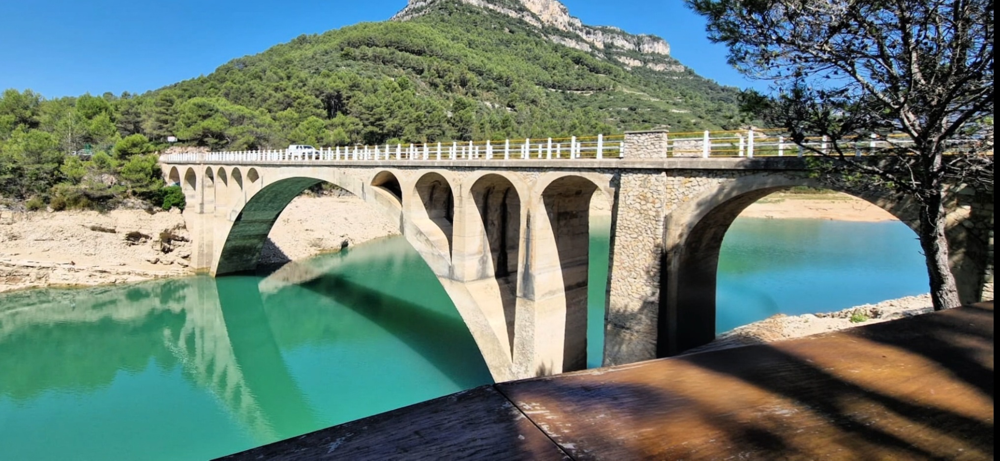
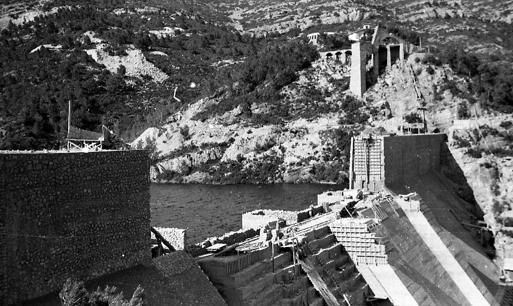
La gestió de l’aigua del riu Sénia va provocar conflictes entre pobles des de l’Edat Mitjana, fet que va impulsar la idea de construir un embassament ja al segle XIX. Després de diversos intents fallits, el projecte definitiu es va aprovar el 1942 i les obres van finalitzar el 1983. Tot i estar situat a la Pobla de Benifassà, rep el nom de pantà d’Ulldecona perquè aquest municipi en va ser el principal impulsor i finançador.
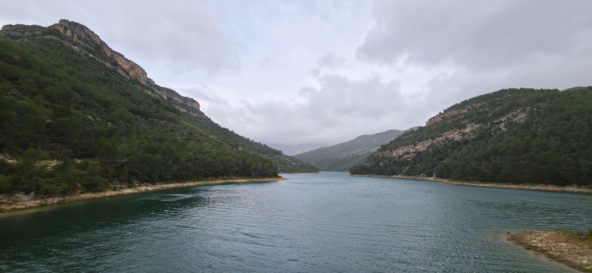
El pantà d’Ulldecona es troba al terme de la Pobla de Benifassà, dins del Parc Natural de la Tinença de Benifassà, a la província de Castelló. Recull les aigües del riu Sénia, que neix a la Tinença i marca la frontera natural entre Catalunya i el País Valencià. El riu s’origina als barrancs de la Fou i de La Pobla, que aporten les seves aigües a l’embassament.
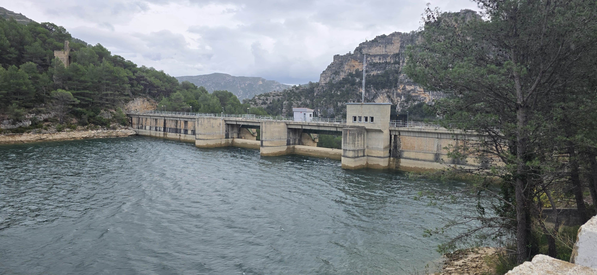
El pantà d’Ulldecona és un embassament de dimensions modestes però essencial per al territori, amb una capacitat de fins a 11 hm³ i una superfície inundada màxima d’unes 817 hectàrees. La seva presa de formigó per gravetat, de 61 metres d’alçada i 167 de longitud, aprofita el pes propi per resistir l’empenta de l’aigua, garantint seguretat i estabilitat a la vall del Sénia.
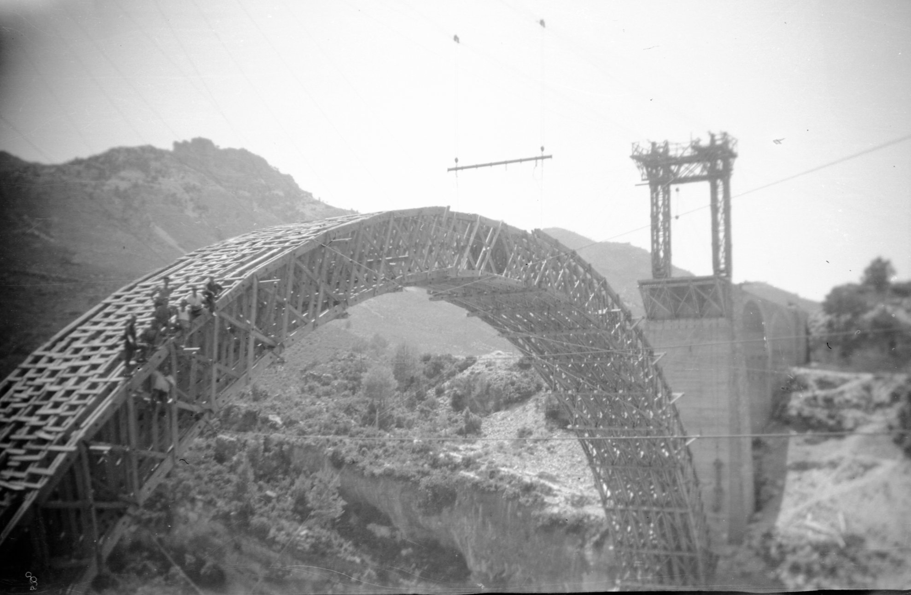
A més de la presa, el pantà d’Ulldecona inclou obres destacades com la nova carretera entre la Sénia i Castell de Cabres, un pont d’un sol arc de 64 metres i diversos edificis de serveis. Aquest conjunt conforma una infraestructura hidràulica rellevant, valorada tant pel seu disseny tècnic com per la seva harmoniosa integració en el paisatge.
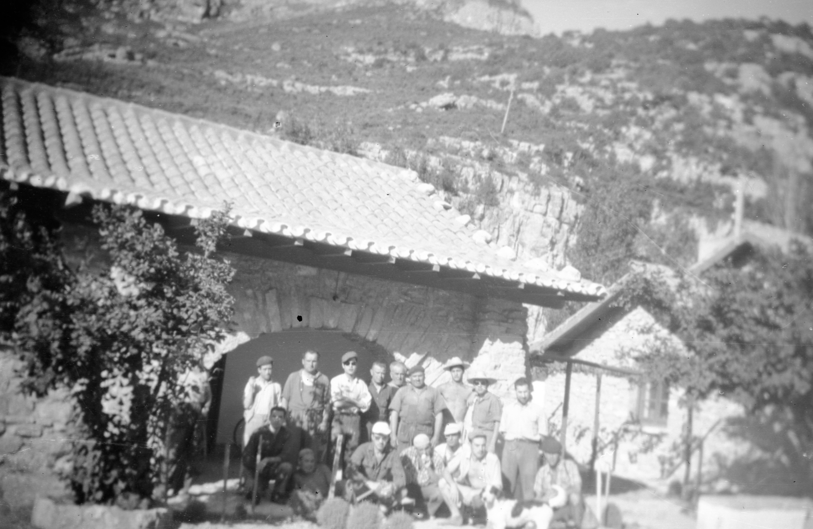
El paper principal de l'embassament és de regadiu, i proporciona aigua a la seva comunitat de regants (Ulldecona, La Sénia, Rossell i Sant Rafael del Riu). Originalment, el reg era exclusiu per als cultius d'Ulldecona, però amb aquest canvi, la comunitat de regants disposa d'aigua en les èpoques més seques de l'any.
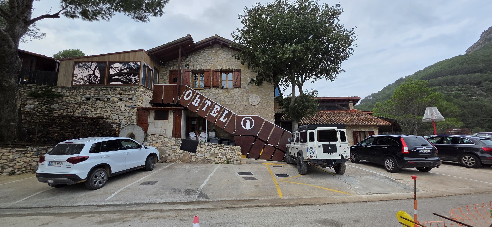
Aquest també té un ús turístic i recreatiu. A les aigües de l'embassament pots anar a gaudir d'un dia de tranquil·litat, hi disposaràs de tot. Hi ha un restaurant, hi ha senderes, pots fer caiac i fins i tot, pots anar a passar el dia amb el teu pícnic i banyar-te al pantà.
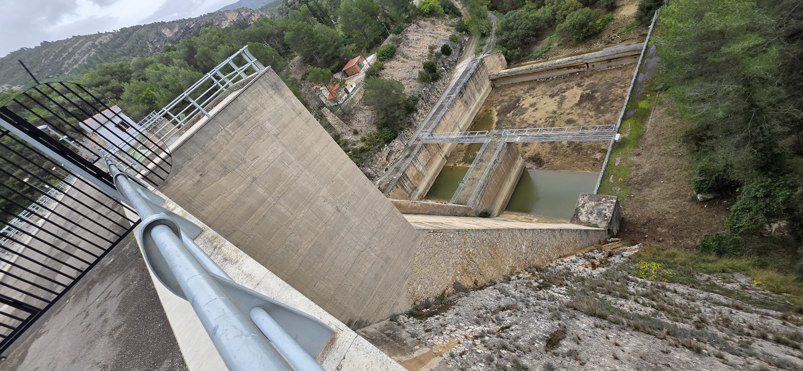
A part d'avantatges, la construcció de l'embassament també ha generat inconvenients. Sobretot ha afectat el transcurs del riu i a les seves temperatures. És veritat que des de l'embassament fins a Sant Pare hi ha aigua disponible, però en punts clau com en la séquia de les Foies, l'aigua ja és més escassa.
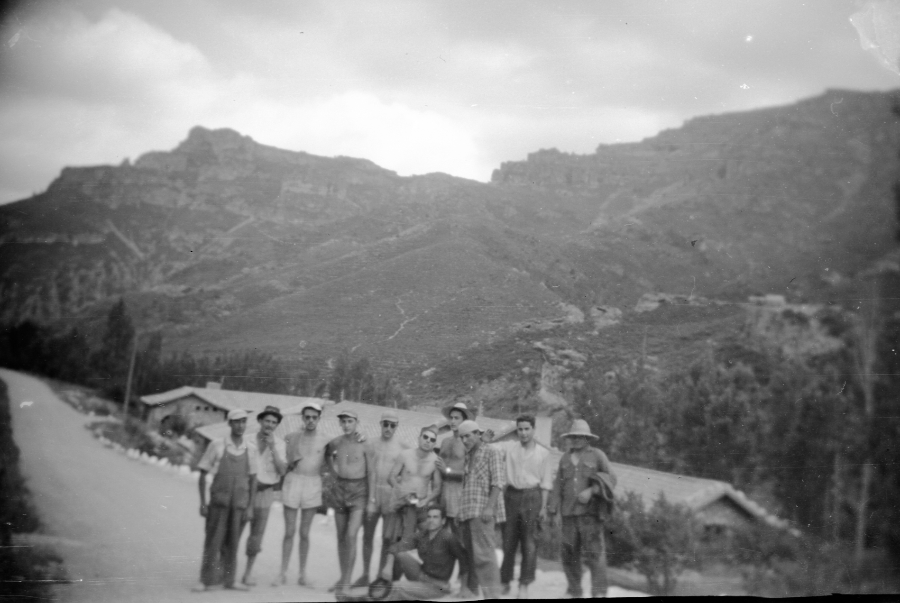
Aquest pantà viu en una constant disputa entre la gent de La Sénia, Ulldecona i La Pobla de Benifassà per veure a quina població pertany l'embassament. Aquesta problemàtica és molt popular en la zona de les Terres de l'Ebre i té molta força, perquè depèn d'on i a qui li preguntis, el pantà és d'uns o dels altres.
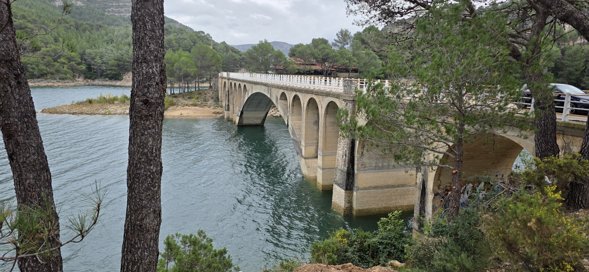
Si et dirigeixes a un senienc o senienca, el més probable és que et digui que el pantà és de La Sénia. Això és degut al fet que socialment, el pantà, ha aportat molt més que als altres dos municipis i majoritàriament el poble que va acollir els treballadors del pantà durant la seva construcció va ser La Sénia.
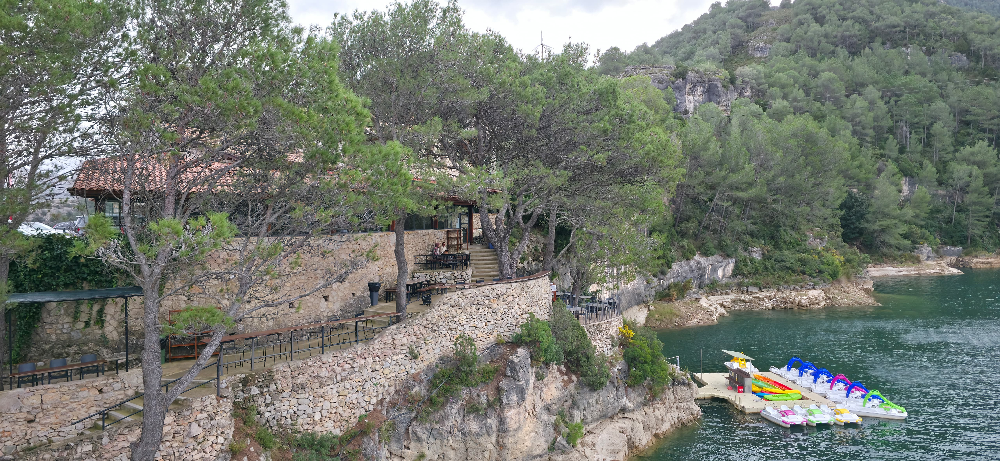
Quan parlem als falduts i faldudes, no dubten a afirmar que el pantà és d'Ulldecona i no s'equivoquen econòmicament parlant, ja que paguen tot el que suposa l'embassament juntament amb la Confederació Hidrogràfica del Xúquer, concretament un 40% del cost total. A més, la proposta de construcció la va dur a terme Ulldecona, per aprofitar ells exclusivament l'aigua del riu Sénia.
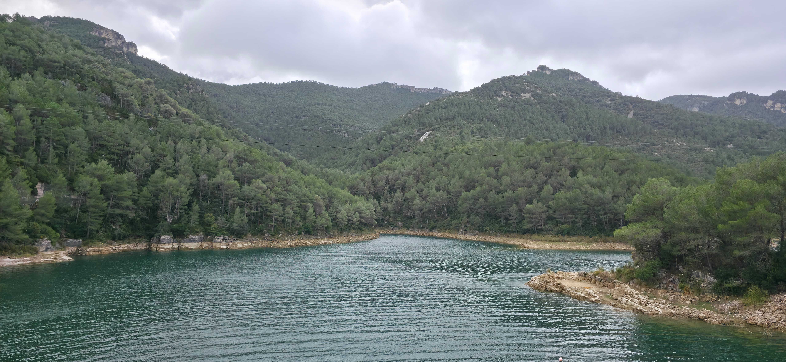
Pel que fa a La Pobla de Benifassà amb tota aquesta controvèrsia passen més desapercebuts, però no vol dir que el pantà no els pugui pertànyer, de fet, aquest està situat al seu terme. Aquesta problemàtica engloba àmbits econòmics, socials, topogràfics, històrics, etc. Aquest cúmul de factors fa que la gent pensi de formes diferents sobre qui és el propietari del pantà.